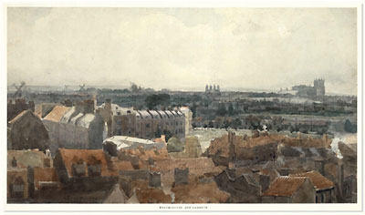

|
British
Watercolours

Left: Thomas Girtin,
Westminster and Lambeth, around1800. Watercolour over pen
and ink 293 x 526 mm Presented by Chambers Hall 1855-2-14-23
Watercolour
came into regular use in England around the end of the 17th century,
some two hundred years after Dürer's pioneering work with this medium.
It was in the last third of the 18th century that watercolour established
itself as the preferred technique for what had become a veritable
craze: landscape views, whether conceived as an accurate topographical
record, a travelogue of picturesque scenery, or more fanciful compositions
of romantic features such as ruins and rural genre subjects. An
increasing emphasis was placed on capturing the transient effects
of the weather, for which watercolour was particularly well suited.
Despite its undoubted popularity among amateurs and professional
artists, it was to take a hundred years and the compelling advocacy
of John Ruskin before the landscape watercolour came to be recognised
as the outstanding achievement of British art, in the hands of J.M.W.
Turner above all, but also of Thomas Girtin, David Cox or Samuel
Palmer.
Many
of the finest watercolours in the Department of Prints and Drawings
entered the Museum as gifts or bequests. The collection began in
earnest in 1816, when Francis Towne (1740-1816) bequeathed three
albums containing seventy-four of his own watercolours made during
a visit to Rome in 1780-81. This was followed in 1855 by a gift
from Chambers Hall of sixty-six drawings and watercolours by Thomas
Girtin (1775-1802). The purchase in 1902 of the collection of James
Reeve brought the Department four hundred and eighty-one drawings
and watercolours by artists of the Norwich school, including many
of the best known works of John Sell Cotman (1782-1842). The Salting
Bequest in 1910 provided sixty-eight more exceptionally fine watercolours,
including eighteen important works by J.M.W.
Turner (1775-1851). Arguably
the finest, most immaculately preserved watercolours in the Department
came in 1958 with the bequest of Robert Wylie Lloyd. This collection
of one hundred and thirty-seven British drawings and watercolours,
including sixteen works by John 'Warwick' Smith (1749-1831) and
sixty-one by Turner, had been carefully preserved from damaging
natural light and the watercolours remain among the freshest examples
of the medium.
Highlights
John
White's watercolours (active 1585-1593) are some of the earliest
in the collection. As draughtsman-surveyor on Raleigh's expedition
to colonise Virginia, he produced a detailed series of watercolours
illustrating the native inhabitants of Virginia and Florida, their
customs and the region's flora and fauna. These drawings are a unique
record for the study of early American history.
The
British school of watercolour painting as we know it, was not firmly
established until the middle of the eighteenth century. It is represented
in the Department by artists such as the brothers Paul (1725-1809)
and Thomas Sandby (1721-1798), who produced topographical 'stained'
drawings of scenes around the British Isles. The landscapes artists
made while travelling abroad during the Grand Tour, provide the
collection with picturesque Italian and Alpine views. Some of the
finest of these were produced by John Robert Cozens (1752-1792),
John 'Warwick' Smith and Francis Towne.
A fine selection of watercolours illustrating contemporary life
form an important part of the collection. The careful draughtsmanship
and sharp wit of Thomas Rowlandson (1756-1827) make him one of the
most skilled satirists of the period. The artist George Scharf (1788-1860),
a Bavarian who settled and worked in London, also produced watercolours
which documented everyday life in the Regency and early Victorian
periods.
In
addition to those artists already mentioned, the Department contains
representative groups of works by David Cox (1783-1859), Peter de
Wint (1784-1849) and Richard Parkes Bonington (1802-1828), three
of the most accomplished watercolourists of the nineteenth century.
John Constable (1776-1836), although best known for his oil painting,
used watercolour for marvellous nature and sky impressions, particularly
from his beloved Hampstead Heath.
Works in Other Collections
| London
|
Victoria and Albert Museum
Tate Britain
|
| UK
|
All
the major regional and university museums |
| USA |
Yale
Center for British Art, New Haven |
Further
Reading
Binyon, L. Catalogue of Drawings by British Artists and Artists
of Foreign Origin Working in Great Britain preserved in the Department
of Prints and Drawings, British Museum. London, 1898-1907
Hardie, M. Watercolour Painting in Britain. 3 Vols. Batsford,
1967
Stainton, L. British Landscape Watercolours 1750-1850. British
Museum Press, 1985
Wilton, A. British Watercolours 1750-1850. Phaidon, 1977
Wilton, A. and Lyles, A. The Great Age of British Watercolours
1750-1880. Royal Academy, 1993
|